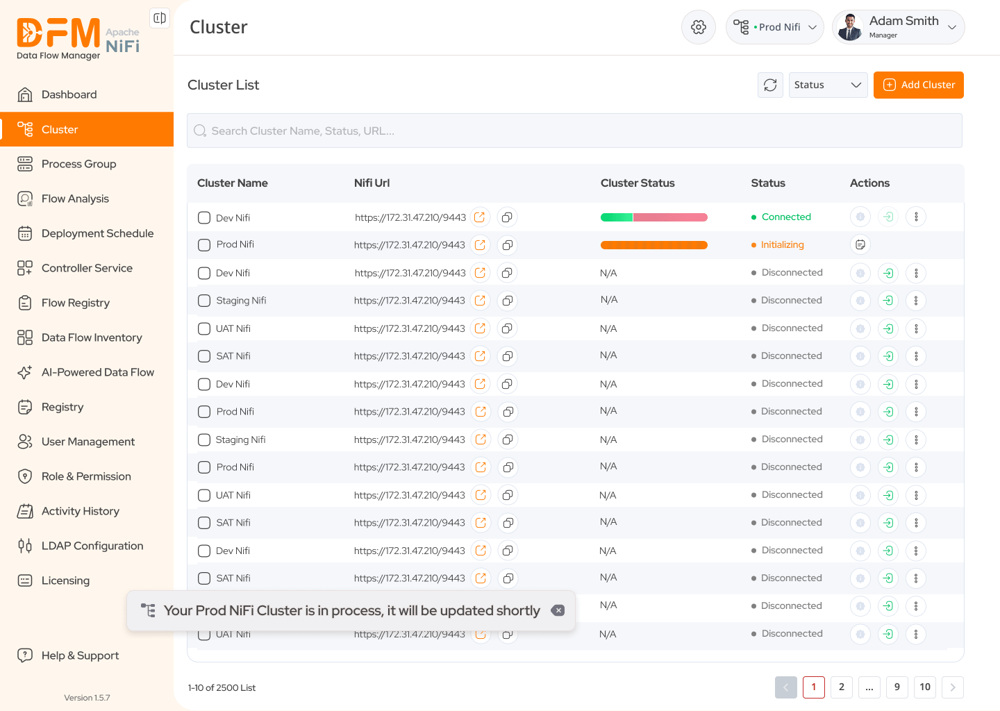
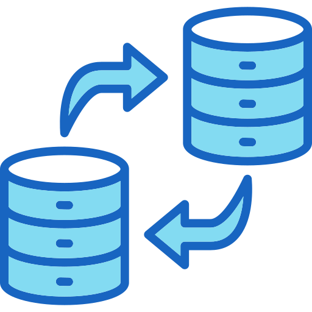
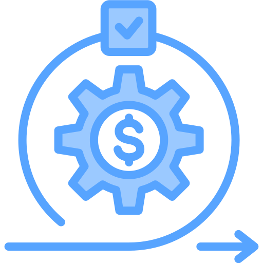
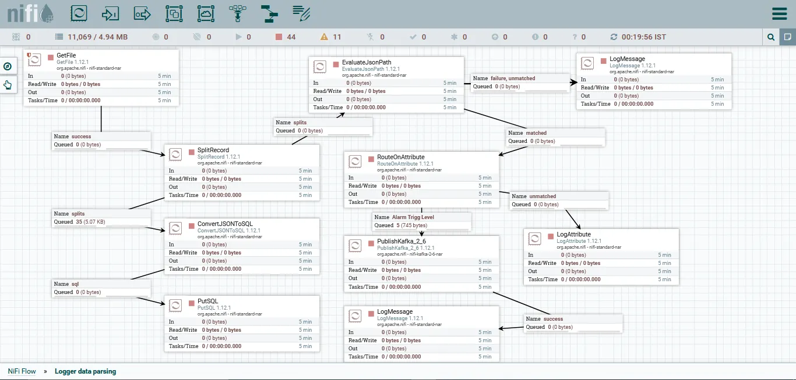
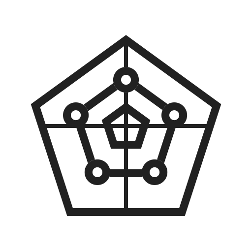
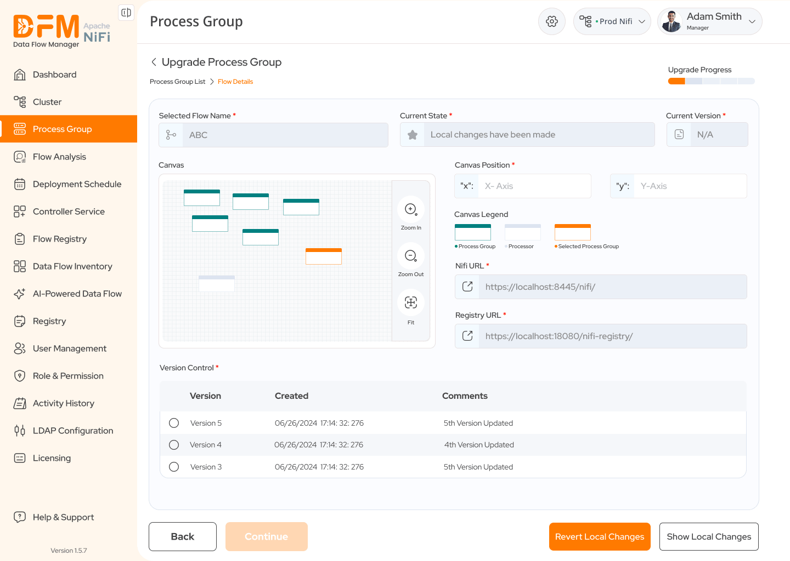

Every release was a long, risky night
Shipping one update meant logging into a dozen separate systems, changing settings by hand, and hoping nothing broke. When something did, nobody could tell what had changed.
Big companies use Apache NiFi to move data between their systems. Building those data pipelines was easy. Running them across dozens of servers was slow, manual and risky. I designed Data Flow Manager (DFM): one place to ship, check and track every change.

This is the story of how a team of data engineers stopped babysitting late-night releases, and how a single, calm screen replaced a pile of scripts, spreadsheets and logins.
Shipping one update meant logging into a dozen separate systems, changing settings by hand, and hoping nothing broke. When something did, nobody could tell what had changed.
Talking to the people doing this work showed the tool was fine for building data pipelines. Nobody had built anything for running them.
DFM puts every system on one screen, checks each change before it goes live, and records who did what. Hours of manual work became a few minutes.
Every large company has data scattered across dozens of apps, databases and cloud services. Apache NiFi is the open-source tool many of them use to keep that data moving to where it needs to be.
Think of NiFi as a giant postal sorting centre for data. Parcels arrive from everywhere, get sorted and repackaged, and are sent to the right address, millions of times a day, without anyone touching them.

No more exporting a spreadsheet from one system and importing it into another by hand.
It processes millions of records around the clock without slowing down or dropping any.

When data has to pass through several systems, NiFi cleans and reshapes it at every stop, on its own.
Databases, web services and cloud tools can all exchange data, wherever it lives.
Arjun is a senior data engineer. He's very good at NiFi, and that's the problem: he's one of the few people trusted to ship changes, so every release lands on his desk. Here's what a typical release night looked like.
Arjun waits until after business hours, when traffic is low, to start.
Each one has its own login, its own settings, and its own browser tab.
Copy, paste, double-check against a spreadsheet. Then do it again.
One setting was wrong. Nobody can see what changed since last week, or who changed it.
There's no undo button, so he reconstructs it from memory and notes.
The next morning, management asks why a “five-minute update” took all night.
An illustrative night, pieced together from what operators described in interviews.
Interviews across 14 enterprise teams kept surfacing the same three roles. Arjun runs the releases. Priya decides when changes are safe to go live. Sanjay has to prove to auditors who changed what.
Senior Data Platform Engineer
Enterprise Logistics · 600+ employees
I spend more time babysitting deployments than actually improving the platform.
DevOps & Release Manager
Healthcare data services · 1,200 employees
Every promotion to production is a meeting, a checklist and a prayer.
Platform Security & Governance Admin
Financial services · regulated environment
When the auditor asks who changed a flow, I need an answer in minutes, not days.
Composite personas built from interviews across logistics, healthcare and financial services. Arjun is the primary persona; Priya and Sanjay are secondary.
He wasn't asking for a prettier dashboard. He wanted to do his job without holding the state of 12 systems in his head. That shaped every decision that followed.
NiFi gives engineers an excellent visual workshop for building data flows. But once a flow was built, the people responsible for running it across many clusters had nothing made for them.

Delays, outages and rising costs all happened at the same moment: when a finished flow had to move from the workshop to the real servers. That wasn't an engineering failure. A product was missing.
How might we give the people who run NiFi a single control room, where they can ship changes safely across every cluster without needing a specialist on call?
I didn't start with screens. I wanted to know how these teams actually spent their days, where time disappeared, and why so much depended on so few people.
NiFi is a deep, technical tool, so first I learned how companies really run it day to day.

I interviewed everyone who touched the process, from the engineers building flows to the business owners waiting on them.
Teams were spending more time on chores around their data than on the data itself. Paraphrased from the interviews:
“I log into a dozen different clusters every single day.”
“I change the same setting in every environment, by hand.”
“Before every release, I run through a checklist manually.”
“Once a release starts, I can't see how it's going.”
“Something changed last week, and nobody knows who did it.”
“If our senior admin is out, releases just wait.”
NiFi does its core job, moving data, very well. The pain came from managing it, and it grew with every new cluster, environment and flow a company added.
Before designing anything new, I looked at everything these teams were already using. Each tool solved a piece of the puzzle, and none of them covered a release from start to finish.
| Tool | Good at | What's missing | Verdict |
|---|---|---|---|
| NiFi canvasBuilt into NiFi | Designing data flows visually. | Shipping them, handling many clusters, keeping a history. | Builder only |
| NiFi RegistryBuilt into NiFi | Saving versions of a flow, like “track changes” in a document. | Actually releasing those versions or managing clusters. | Partial |
| Custom scriptsAnsible, Bash, DIY | Automating steps, for teams that can write code. | A screen anyone can use, and safety checks. Scripts break often and need constant upkeep. | Fragile |
| Cloudera / HortonworksBig vendor packages | An all-in-one managed setup. | Freedom. You're tied to one vendor and its cloud, at $1.2M+ a year. | Locked in |
| DFMWhat we built | The whole job: ship, promote, watch and fix, by typing a request or clicking. | Nothing locked in. It runs on the company's own servers. | The gap |
Nobody was building a control room for NiFi. The gap wasn't one missing feature; a whole kind of product was missing. That's why DFM became a platform rather than a plugin.
Each big design decision came straight from something I saw or heard in research. Here's what we noticed, what we could have done, and what we chose.
We noticed: operators think in commands, like “deploy this to QA”. Doing that through menus took 14 clicks. So DFM lets them type what they want in plain English, then shows a clear summary to confirm.
We noticed: the #1 cause of mistakes was being in the wrong place, like changing the live system when you meant to change the test copy. So Dev → QA → Prod sits at the top of every screen, like a mall map.
We noticed: 95% of live-system incidents traced back to a release that skipped its checks. So checks became a gate every change has to pass, not a warning people could click past.
We noticed: operators spent hours digging through logs after things failed silently. So DFM shows health live, like the warning lights on a car dashboard, and problems rise to the top on their own.
We noticed: these teams work in heavily regulated industries like healthcare and finance, under standards such as HIPAA, SOC 2 and ISO 27001. Their data can't leave their own servers. So DFM runs inside each company's own setup, controls who is allowed to do what, and records every action with a name and a time, ready for an auditor.
DFM had to feel as quick as sending a message while still meeting the rules banks and hospitals live by. Working through that tension is what gave the product its shape.
DFM sits on top of NiFi as the missing control room: every cluster in one place, guided releases with checks built in, flows you can describe in plain English, and a record of every change.
All 12 clusters are on one screen, each showing whether it's healthy.
DFM shows exactly what will change before he commits to anything.
The same mistake that broke cluster 9 is flagged before it reaches the live system.
Every step is logged with his name and the time.
Nothing to explain the next morning.

One list shows every cluster and how it's doing: connected, starting up, or offline. Adding a new one takes a couple of steps. A switcher at the top always tells you which stage (test or live) you're working in.
Fixes“I log into a dozen different clusters every day.”
Updating a flow is now four clear steps: pick the version, check the settings, run the automatic checks, review the summary. A progress bar shows where you are, you can see and undo local changes, and everything is confirmed healthy before it goes live.
FixesManual checklists, and small typos turning into big outages
Instead of wiring parts together by hand, you type what you need, like “copy CSV files from one folder to another”, or start from a template. DFM builds the flow for you to review.
Fixes“If our senior admin is out, releases just wait.”
People sign in with their usual company account (LDAP). Admins set roles and permissions in one place, and an activity history and an inventory of every flow sit alongside. Every change carries a name and a time.
Fixes“Something changed last week, and nobody knows who did it.”
DFM rolled out to pilot customers in logistics, healthcare and financial services. Here's what changed for them.
Most of the repetitive, by-hand steps are now done by DFM, across every cluster and stage.
A release that used to eat a whole evening now takes minutes, with checks built in along the way.
Compared with buying a big vendor's package, teams avoid over $1M a year and keep full control of their own setup.
Remember Arjun? “I spend more time babysitting deployments than actually improving the platform.” DFM was built to turn that sentence around.
DFM started as “a dashboard for NiFi” and became a product built around how operators actually work, think and worry. These are the lessons that made the difference.
Operators didn't need more numbers on screen. They needed to stop keeping everything in their heads. Always showing “where am I, and what's happening?” mattered more than any new feature.
Research showed teams weren't missing one feature. They were missing a whole tool, and that changed DFM from an add-on into a platform.
Strict industry rules first felt like a roadblock. In the end, balancing speed with safety is exactly what gave DFM its shape.